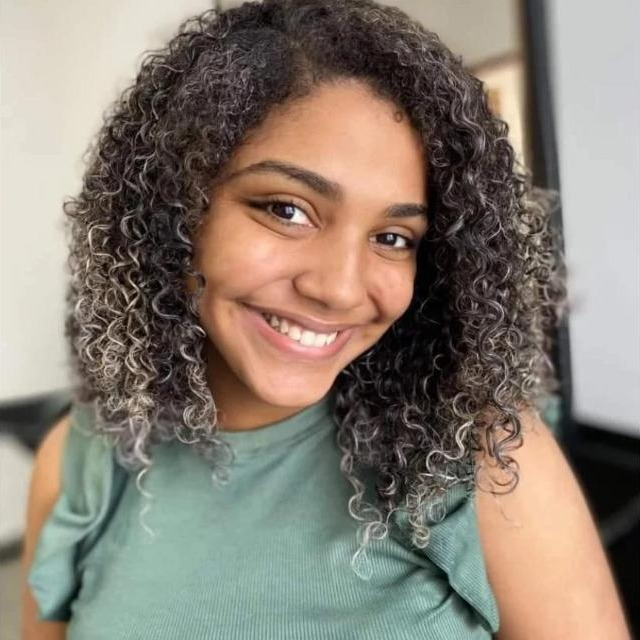
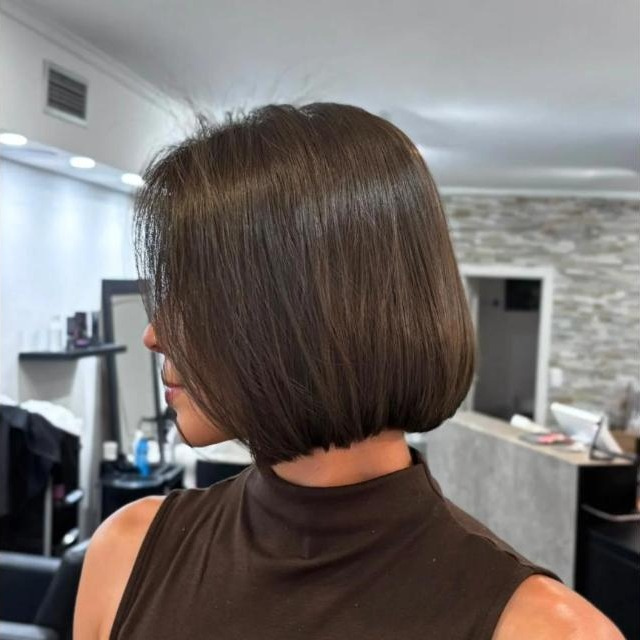
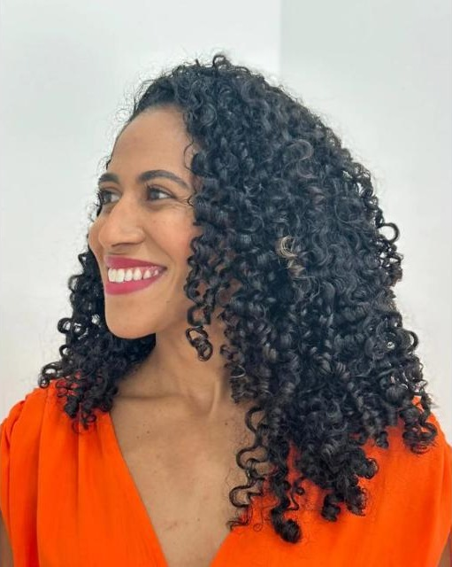
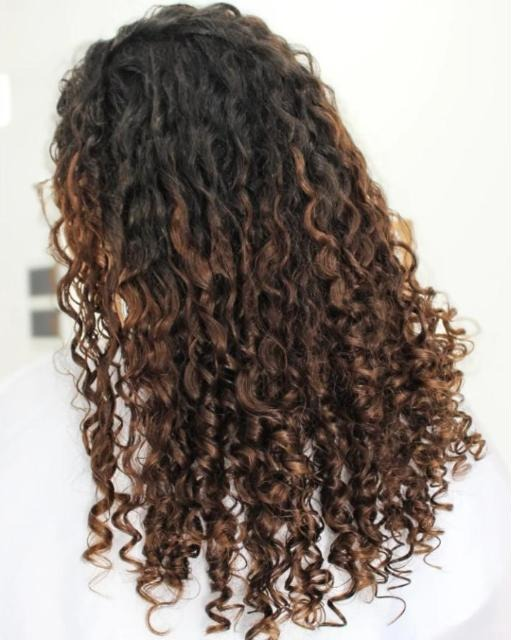
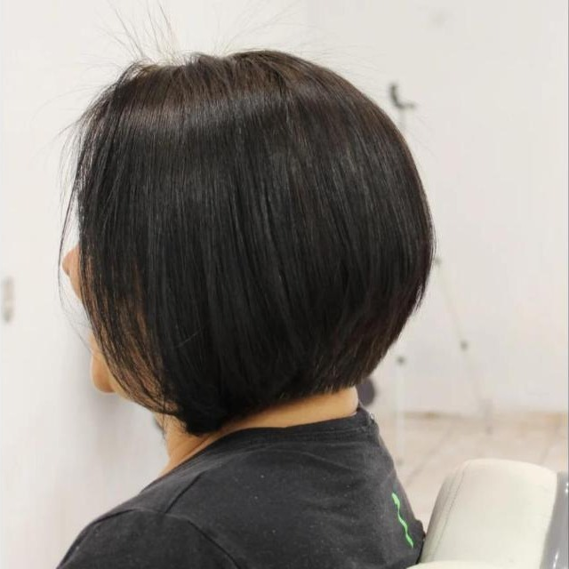
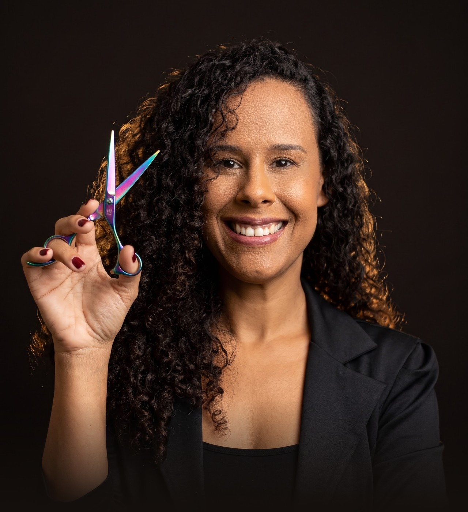
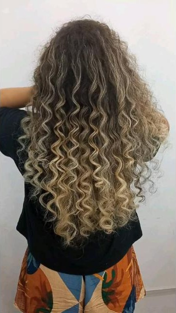
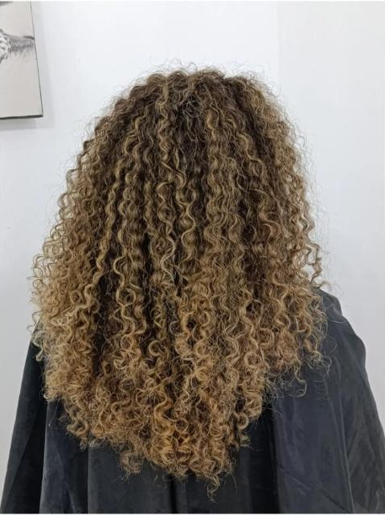

Posts do Instagram: o seu cabelo, frase e carrossel
Aqui o protagonista é o cabelo que você faz, com uma frase que encaixa, no estilo que os melhores salões usam. Mais abaixo, jeitos novos de usar a sua foto, sem aquele roxo pesado por trás. As frases são sugestão para você ajustar.
1. Cabelo + frase: cinco jeitos
Cada um serve para um tipo de post. O primeiro e o terceiro funcionam para resultados. O segundo para frase de marca. O quarto é um pôster. O quinto lista serviços.

Rizos con definición, sin frizz.
PELUQUERÍA · ALICANTEFoto em cima, frase embaixo
O mais seguro: a foto manda e o texto descansa.
frase: sugestão, você aprova
Un chanel de precisión.
Línea limpia, peso en su sitio y brillo que dura.
Metade foto, metade frase
Fundo blush quente, como os pôsteres de salão.
frase: sugestão, você aprova
Cuidar de ti por entero.
Arco dourado
Mesmo arco da página do curso: a marca se repete.
frase: sugestão, você aprova
Cachos soltos, vida cheia.
Pôster com véu ameixa
Foto sangrando e frase em ouro. Tom da marca sem tapar o cabelo.
frase: sugestão, você aprova
Peluquería en Alicante
- Corte
- Color
- Mechas
- Alisado
Serviços sobre a foto
Os quatro serviços estão na sua bio. Estilo "mega hair" do Renew.
lista: confirmar com você2. A foto nova de estúdio
Troquei todos os retratos pela foto de estúdio nova, com fundo preto quente. O preto casa com a foto: nada de retângulo estranho nem roxo pesado. Os dois que você gostou continuam: a cúpula e o nome grande.

Técnica é cuidado com método.
Cúpula creme
A que você gostou, agora com a foto de estúdio.
frase: sugestão, você ajustaCabelo bonito começa na mão que sabe.
Cúpula blush
Mesma ideia sobre fundo blush quente.
frase: sugestão, você ajustaNome grande, fundo preto quente
O nome na frente e a foto sem moldura. O subtítulo tem faixa dourada e contraste.
texto: confirmarNome grande, fundo lavanda
O mesmo post, com o nome em branco sobre lavanda.
texto: confirmarAprenda com quem faz.
Pôster com frase
Foto sangrando, véu escuro embaixo e a frase em ouro.
frase: sugestão, você ajustaO cabelo que você tem, do seu jeito.
Foto cheia + cartão creme
O texto num cartão, sem competir com o rosto.
frase: sugestão, você ajusta3. Carrossel: cuidar dos cachos em 6 telas
Carrossel é o que mais salva e compartilha. Capa que promete, quatro dicas curtas e uma chamada final para marcar hora. As dicas são genéricas e conhecidas; você troca pelas suas. Deslize para o lado.

5 claves para cuidar tus rizos
1 · Capa
Hidrata antes de definir
Un rizo seco se encrespa. Primero mascarilla o acondicionador, después el producto de definir.
2 · Dica
Peina con el pelo mojado
Con acondicionador y peine de púas anchas. Seco, el rizo se rompe y pierde forma.

3 · Dica
Seca sin frotar
Una camiseta de algodón o una toalla de microfibra, a toques suaves, no con fuerza.
4 · Dica
Corta las puntas a tiempo
Cada tres meses, más o menos. Las puntas abiertas deshacen el rizo antes de tiempo.
5 · Dica
¿Lo vemos en tu pelo?
6 · Chamada
4. Mais posts com a foto nova
Capas de carrossel e posts de apresentação, de chamada e do curso, para a grade do perfil. Cada capa promete uma coisa e leva ao carrossel.
5 claves para cuidar tus rizos
Capa de carrossel 1
A capa que promete, com ela olhando para quem passa.
frase: sugestão, você ajustaTu pelo, paso a paso
Capa de carrossel 2
Arco dourado, igual ao da página do curso.
frase: sugestão, você ajustaSoy Juliana, peluquera en Alicante
- Corte
- Color
- Mechas
- Alisado
Apresentação (fixado)
Quem é, onde está e o que faz. Serviços da bio dela.
lista: confirmar com você¿Lo vemos en tu pelo?
Chamada para marcar hora
O fixado "Cómo reservar".
link e horário: confirmarCurso online de cabeleireira
- 5 módulos
- Certificado
- Mentorias ao vivo
- Comunidade
- Garantia de 7 dias
Chamada do curso
Sem preço. O preço só entra com o seu aval.
frase: sugestão, você ajusta